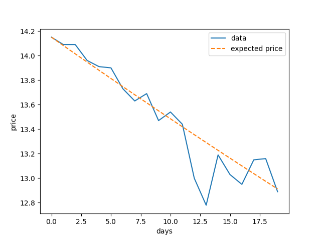

Black Scholes Model with Stock Simulation
Last edited on: July 19, 2021 11:56 AM
The article explores the use of geometric Brownian Motion (GBM) to simulate the price of stocks. The concept naturally extends to the Black-Scholes-Merton (BSM) model which is widely used to estimate the pricing variation of financial instruments such as an options contract. Monte Carlo simulation (MCS) is then used to estimate the stock pricing and validate the model predictions.
Geometric Brownian Motion
Stochastic process
A geometric Brownian motion (GBM) is a continuous-time stochastic process in which the logarithm of the randomly varying quantity follows a Brownian motion (also called a Wiener process) with drift. The stock price $S_t$ is said to follow a GBM if it satisfies the following stochastic differential equation (SDE):
$$dS_t = \mu S_t dt + \sigma S_t dW_t$$
$W_t$ is a Wiener process or Brownian motion, and the expected return $\mu$ and the standard deviation of returns (volatility) $\sigma$ are constants. Note that $W_t$ is normally distributed with mean $0$ and variance $t$. For an arbitrary initial value $S_0$ the above SDE has the analytic solution:
$$S_t = S_0 \exp \left[ \left( \mu - \frac{\sigma^2}{2} \right) t + \sigma W_t \right] = \exp \left[ \ln S_0 + \left( \mu - \frac{\sigma^2}{2} \right) t + \sigma W_t \right]$$
The GBM is technically a Markov process. The stock price hence follows a random walk and is consistent with the weak form of the efficient market hypothesis (EMH).
1 | |
Probability density function
Since the exponent of $S_t$ is normally distributed, we can use the change of variable formula to calculate the probability distribution of $S_t$. Let $Z \sim \mathcal{N}(m, v)$ where the probability density function of $z$ is given by:
$$f_Z(z) = \frac{1}{\sqrt{2\pi v}} \exp \left[ -\frac{(z-m)^2}{2 v} \right]$$
We then calculate the probability density function of $x = g(z) = e^z$ using:
$$f_X(x) = f_Z(z = g^{-1}(x)) \left| \frac{dz}{dx} \right| = \frac{1}{x \sqrt{2\pi v}} \exp \left[ -\frac{(\ln x -m)^2}{2 v} \right]$$
Note that for $S_t$ the exponent is normally distributed with mean $\ln S_0 + \left( \mu - \frac{\sigma^2}{2} \right) t$ and variance $\sigma^2 t$. Hence, $S_t$ follows a log-normal distribution:
$$S_t \sim \mathcal{LN} \left[\ln S_0 + \left( \mu - \frac{\sigma^2}{2} \right) t, \sigma^2 t\right] $$
Maximum likelihood estimate
In order to estimate the percentage drift $\mu$ and percentage volatility $\sigma$, we use the previously calculated probability density function for log-normal distribution to obtain an expression for the log-likelihood:
$$L = - \frac{n}{2} \ln v - \frac{n}{2} \ln 2\pi - \sum_{i=1}^n \ln x_i - \sum_{i=1}^n -\frac{(\ln x_i -m)^2}{2 v}$$
Differentiate with respect to the model parameters to find the maximum likelihood (ML) estimate:
$$m = \frac{\sum_{i=1}^n \ln x_i}{n}, \quad v = \frac{\sum_{i=1}^n (\ln x_i - m)^2}{n}$$
We can use the GBM to model real financial data by looking at the General Electric stock daily data over 20 business days.
1 | |
By calculating the mean and variance of the log returns, we can obtain an estimate of the risk free interest rate and volatility.
$$\ln \frac{S_t}{S_0} = \left( \mu - \frac{\sigma^2}{2} \right) t + \sigma W_t \sim \mathcal{N} \left[ \left( \mu - \frac{\sigma^2}{2} \right) t, \sigma^2 t \right]$$

Black Scholes Model
The Black-Scholes Formula
The Black-Scholes call option formula is calculated by multiplying the stock price $S_t$ by the cumulative standard normal distribution. Thereafter, the net present value (NPV) of the strike price $K$ with risk-free interest rate $r$ and time to maturity $t$ is multiplied by the cumulative standard normal distribution and subtracted from the resulting value. The call option price $C$ is therefore given by:
$$C = S_t N(d_1) - K e^{-rt} N(d_2)$$
$N(d_2)$ is the risk-adjusted probability that the option will be exercised. $N(d_1)$ is the factor by which the present value of contingent receipt of the stock exceeds the current stock price.
$$d_1 = \frac{\ln \frac{S_t}{K} + \left( r + \frac{\sigma^2}{2} \right)t}{\sigma \sqrt{t}}, \quad d_2 = d_1 - \sigma \sqrt{t}$$
1 | |
Monte Carlo for vanilla option
Options are financial instruments that give the holder the right, but not the obligation, to buy or sell an underlying asset at a predetermined price within a given timeframe. A vanilla option is a call option or put option that has no special or unusual features. We can compare the average payoff of an option simulated with GBM with its price calculated using the Black-Scholes model.
1 | |
All articles in this blog are used except for special statements CC BY-SA 4.0 reprint policy. If reproduced, please indicate source Ziyi Zhu!